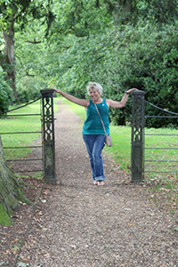

Our Leaders
What they do
a small paragraph about what they do
Kathy Sluiter
While I was living in Florida, I decided I wanted to start a Meetup Group because I wasn't finding a group that I felt I wanted. A Group for women only to do events without being concerned they were going to be hit on in a singles group. When I moved back to Tulsa, I found Bold Betties was looking for some women to host events. After they closed, I started Active Women of Tulsa. I took my experience from the two previous Meet-ups, what worked and what didn't.
The events I like to host are hiking, kayaking, weekend trips in and out of state usually around great hiking or kayaking. Plus I love brunches.great music and great conversation.
Annette Peters

Hi. My name is Annette Peters. I coordinate for Active Women of Tulsa to volunteer at Lindsey House.
Lindsey House helps empower families on their journey to indenpendence. Through learning needed life skills, families can achieve self-sufficiency and indenpendency. Lindsey House provides a safe, stable place for mothers with children to live. When families participate in our program, lives are changed.
I coordinate with Chicktime and Lindsey House to spend time with their children. We pour love and acceptance into these young women and help encourage them on their journey as a family.
Emily LastName
I grew up in Southern OK, and moved to NE OK in middle school. I taught middle school for a bit, but now teach math full time for TCC and part time for OSU-Tulsa. I enjoy gardening, reading, and traveling, and have two small pups. In 2020 I visited all OK State Parks. I love to travel internationally, most recently to Barcelona. I like to hike and kayak, and last year completed a build-out of my Subaru for car camping.
Air Force LastName
I was in the Air Force before and during Desert Storm. After that I earned my PhD after I adopted my son. I am a semi-retired professor no. I play on a Senior Women's Basketball team called Tulsa Tornadoes. We are a group of 55-64 year Olds. I love my dogs, Pete and Barney, and my cat Pokie.
I like hiking, sporting events,
Dibbie LastName
Hi! I've been a member of Active Women's group for a couple of years now. I joined after I moved here from Texas and wanted an opportunity to connect with other women who really jsut want to hang out and have some laughs.
Recently, I started hosting. I look for upcoming events that sound like fun to me and hope there are some like minded women in the group who would like to join me. So far, that look like Bubble/Mud runs, Mardi Gras and St. Patrick's day events, an Alice in Wonderland outdoor escape room and tomorrow's Celtic Festival.
At my events youare welcome to dress up/or not. Hope to be seeing you soon.
Air Force LastName
I was in the Air Force before and during Desert Storm. After that I earned my PhD after I adopted my son. I am a semi-retired professor no. I play on a Senior Women's Basketball team called Tulsa Tornadoes. We are a group of 55-64 year Olds. I love my dogs, Pete and Barney, and my cat Pokie.
I like hiking, sporting events,